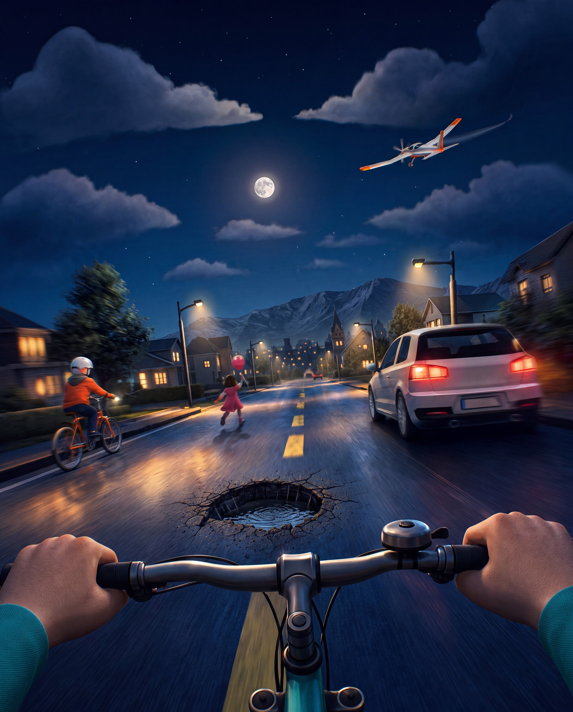
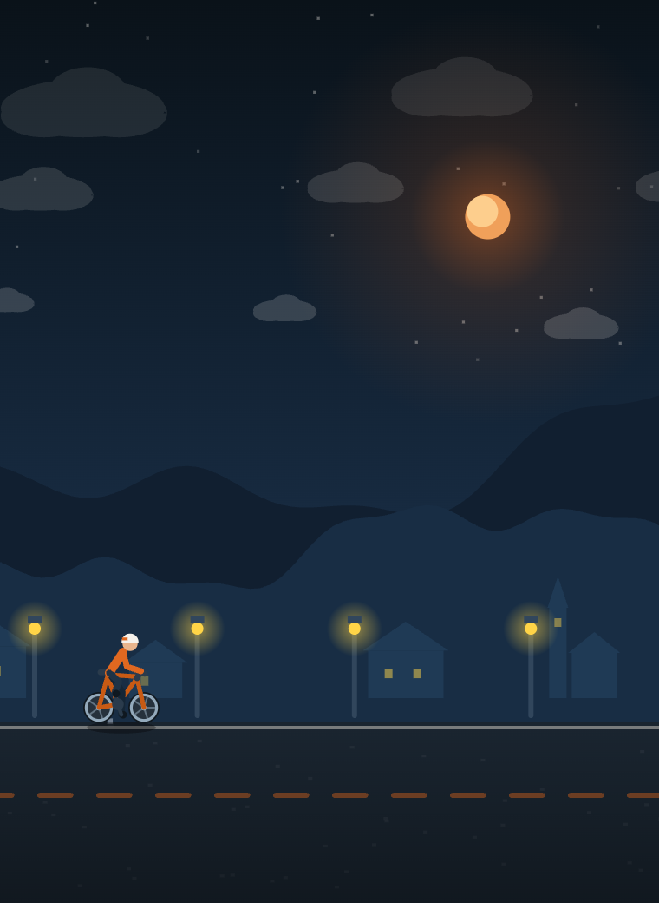
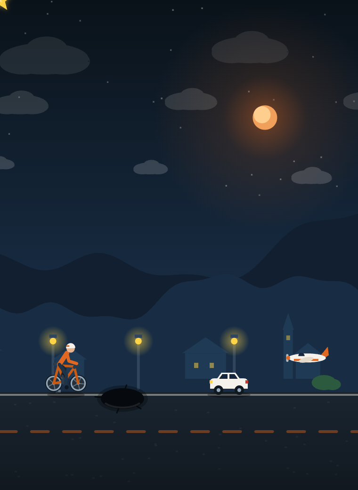

Schwing dich aufs virtuelle Radl: Weiche Schlaglöchern, Autos und Kindern aus, duck dich unter tieffliegenden Flugzeugen weg und schnapp dir Sterne für Bonuspunkte. Wie weit schaffst du es, bis der Radl Hias ausgebremst wird?
🚲 Jetzt kostenlos spielenEchte Ausschnitte aus dem Spiel: entspannte Dorf-Runde bei Nacht und mittendrin im Verkehr – Schlagloch, Auto und Flugzeug gleichzeitig.


Die Steuerung ist bewusst simpel gehalten – Pfeiltasten oder Touch-Buttons, mehr braucht's nicht.
Öffne das Spiel im Browser und drück auf „Los geht's" – ganz ohne Download oder Registrierung.
Pfeiltaste hoch (oder „Springen"-Button): kurz tippen für einen Hupfer, halten für einen hohen Sprung.
Pfeiltaste runter (oder „Ducken"-Button) halten, um unter tieffliegenden Flugzeugen durchzurutschen.
Sammle Sterne für Bonuspunkte und trag deine Distanz in die Bestenliste ein.
Fünf Szenen – Dorf, Wald, Strand, Großstadt und Alm – mit immer neuen Hindernissen, die dir laufend schneller entgegenkommen. So sehen sie im Spiel aus:
Ein kleines Feierabend-Projekt vom Radl Hias – für alle, die zwischendurch ein paar Meter Radl fahren wollen, ohne aufs echte Rad zu steigen.
Nichts. Tour de Hias ist zu 100 % kostenlos – ohne Werbung, ohne In-App-Käufe und ohne Abo.
Nein. Das Spiel läuft direkt im Browser – auf Handy, Tablet und Desktop. Es ist keine Installation und keine Registrierung nötig.
Mit der Pfeiltaste nach oben springst du (kurz tippen für einen kleinen Hupfer, halten für einen hohen Sprung), mit der Pfeiltaste nach unten duckst du dich unter Flugzeugen durch. Am Handy gibt es dafür eigene Touch-Buttons.
Tour de Hias ist ein Feierabend-Projekt von Mathias Blumreich, dem Radl Hias von RadlHias.TV. Mehr vom Radl Hias findest du im Blog und in den Videos.
Schnapp dir dein virtuelles Radl und leg los – dauert keine Minute.
🚲 Tour de Hias spielen